The feel
This is tomorrow as Soviet magazines and posters drew it: satellites and rockets on the covers, then star cities, greenhouses and huge stations where people could live for years.1 Its roots are in the revolutionary avant-garde,2 where a red triangle breaks apart a white circle and the words run on diagonals to keep the whole poster moving.3
It works because the optimism is official: the pictures were made to educate and promote the Communist project rather than to entertain, and they showed a new reality that had nothing to do with the artists' own surroundings.1 Modern games keep the bright surface and let it fail:4 in Atomic Heart, robots built for the fields and for every home go mad.5
- monumental
- diagonal
- official
- optimistic
- state-issued
- quietly frightening
Where it comes from
El Lissitzky made Beat the Whites with the Red Wedge in 1919,3 Vladimir Tatlin designed a leaning iron spiral meant to be the world's tallest structure, never built,6 and in 1928 Georgii Krutikov presented a student project that put buildings in the sky.7 The turn to socialist realism ended those experiments,8 but the popular science magazine Tekhnika Molodezhi, launched in 1933,1 went on running science fiction contests and pictures of the socialist future.8 After Sputnik 1 in 1957 and the first human spaceflight in 1961, space graphics dominated Soviet posters and magazines.9 Atomic Heart, released in February 2023 and set in an alternate 1955,10 aimed to bring the Soviet retrofuturistic world to life.4
Core elements
Diagonal compositions
Constructivist designers tilted everything: Lissitzky set his words on diagonals and varied their tone, colour and scale to add to the movement of the whole composition,3 and Rodchenko photographed from above, from below and on the diagonal so that people would see the world anew.11
Simple shapes in pure colour
Gustavs Klucis and Valentina Kulagina made a radical popular art from simplified shapes and pure colours.12 In Lissitzky's poster a red triangle, standing for the Revolution, breaks apart a white circle.3 Red still leads in Atomic Heart, which opens on a red-dominated palette.13
Cosmonaut figures
From the 1960s cosmonauts, based on Gagarin or Leonov, were the most common figures in Soviet mosaics, and the upward gaze and heroic stance stayed constant.14 Magazines showed them docking and gazing out of portholes as soon as the first crewed flights had flown.1
Space-age architecture
From the 1960s new houses and public buildings began to look like interplanetary ships, satellites and flying saucers, and school walls filled with stars and galaxies.1 Atomic Heart draws on Soviet modernism, whose monumental buildings, its director says, carry the spirit of utopia more than any other style.15
Robots and machines for public work
The magazine artists often had technical training,1 and they drew future technology for mastering the Earth's resources and founding colonies on other planets.8 Atomic Heart's robots were built to work the fields, gather timber, keep the peace and help at home, until there was one in every house.5
Utopia alongside dystopia
Mundfish shows its bright Soviet future through architecture, magazines and the way people dress, with a dystopia running alongside, and says that duality is what makes its world.4 NME's reviewer read the result as a gentle critique of communism's promise to put the collective above the individual.13
How to do it
Compose on diagonals
Run the main shapes and the lettering on diagonals and stay away from the horizontal and vertical, as Lissitzky did to give his pages energy.3 In 3D, put the camera above, below or on the diagonal, with a tilted horizon, fast-receding lines and a low viewpoint.11
Build posters from shapes and photomontage
Block out the layout in simplified shapes and pure colour first.12 For a photomontage, turn the photos greyscale and cut them out, rotate red banners so they cross the frame, and lay a paper texture over the whole poster in Hard Light at 80% opacity.16
Set the lettering in real Cyrillic
Constructivist posters used big bold letters,16 and Lissitzky varied his words in tone, colour and scale.3 Write slogans in real Russian with a Cyrillic face: Russo One is made for headlines and logos,17 and PT Sans is based on Russian sans serifs of the later 20th century.18
Design space-age buildings
Use monumental Soviet modernism indoors and out, and mix old and new in unexpected ways, as Atomic Heart does.15 Shape public buildings like ships, satellites and flying saucers1 in sculptural concrete,19 and put cosmonauts on the walls in mosaic, which is easy to clean and stands up to the weather outdoors.14 Inside, use fabrics printed with stars and rockets and satellite-shaped stools and lamps.9
Paint technology realistically
Make the technology believable: Soviet magazine artists painted moon flights so convincingly that they looked like colour photographs from space.1 Kolchitsky combined sharp detail with soft gradients and expressive strokes for his planets, and Sokolov and Leonov split pictures into real spacecraft in full colour and the distant future in black and white.8
Give each machine a public job
Give each robot or device a public job first, such as farming, forestry, keeping the peace or housework: Atomic Heart's robots did all of these before they went mad.5 For hardware, follow the Polivoks synthesiser, with its khaki military styling, Cyrillic lettering and a 3D control panel that shows its modules.20
Use Soviet electronic music
For abstract space, Artemiev used the ANS synthesiser, which turns sine waves drawn on glass plates into sound.21 For light space pop, Mescherin's ensemble put pickups on accordions, balalaikas and violins and added theremin.22 Atomic Heart sets Soviet pop beside classical pieces and heavy metal,13 and Mick Gordon brought his love of Soviet-era synthesisers to it.10
Cheat sheet
Do
- Tilt the composition and run the words along the diagonals.3
- Carry the bright future into everything, from architecture and magazines to the way people dress.4
- Paint technology believably, until it could pass for a photograph from space.1
- Give every machine a public job before anything goes wrong.5
- Put cosmonauts on the walls, looking up.14
Avoid
- Faux Cyrillic, such as Я for R. It picks letters for their resemblance to Latin ones, not their sound, and Я is read "ya".23
- Drab realism. By the 1980s the magazines had dropped the dreams for realism and duller colour, so work from the vivid years before.1
- Treating it as harmless decoration. Critics of Atomic Heart pointed to a utopian USSR full of red banners with hammer and sickles, and one said it walks a thin line between world-building and praise.24
- Forgetting the cost. Klucis built up Stalin's image in posters and was then purged in the Terror of the 1930s.12
Tools and tutorials
- Road to the Stars, full film
Free to watch at the Internet Archive. Note the colour and the model work.
- Posters of the Soviet Union
Thousands of scans on Wikimedia Commons, with licence details.
- Tekhnika Molodezhi covers
A long scanned run of covers to study.
- Russo One
A free headline face with Cyrillic, used on this page.17
- PT Sans
Based on Russian sans serifs of the later 20th century, for body text in both alphabets.18
- ANS synthesizer
Turns sine waves drawn on glass plates into sound. Artemiev used it for Solaris.21
Palette
Sampled from the 1961 poster, Lissitzky's wedge, the 1950 Tekhnika Molodezhi cover and the Atomic Heart sky. Press a bar to copy its value.
Feel the vibe
Listen
Roscosmos adopted it as its official anthem in 2009. The lyrics have cosmonauts gazing at the Earth and dreaming of home.25
YouTubeFrom Disco Alliance (1980), the first record by the Latvian band: space disco with a heavy synth sound.26
YouTubeFrom Tarkovsky's Solaris, where the ANS synthesiser gave the space scenes their abstract, alien sound.21
YouTubeAlla Pugacheva's song, remixed for Atomic Heart,27 whose soundtrack sets Soviet pop beside classical pieces and heavy metal.13
YouTubeThe full 1964 EP: light space pop from a group whose music early cosmonauts such as Gagarin liked.22
YouTube
More references
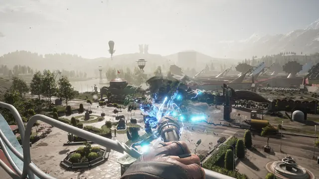
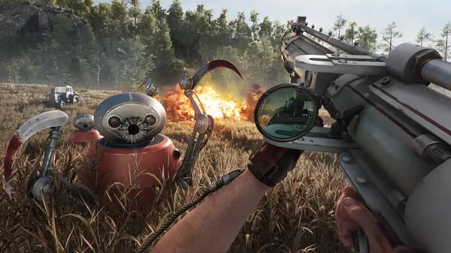
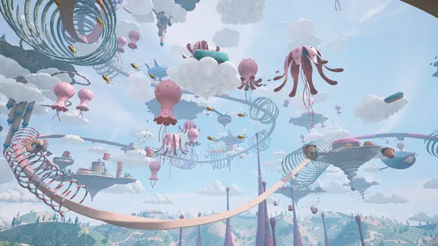
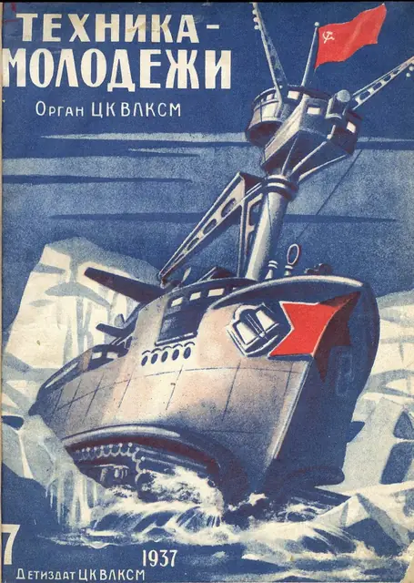
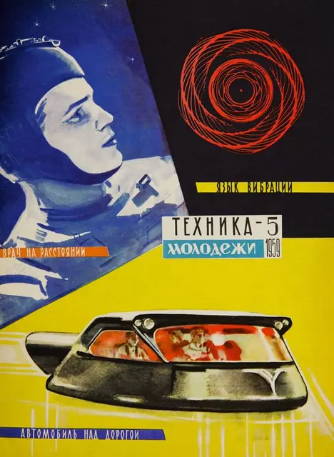
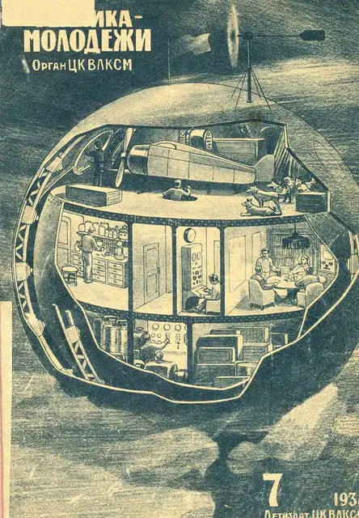
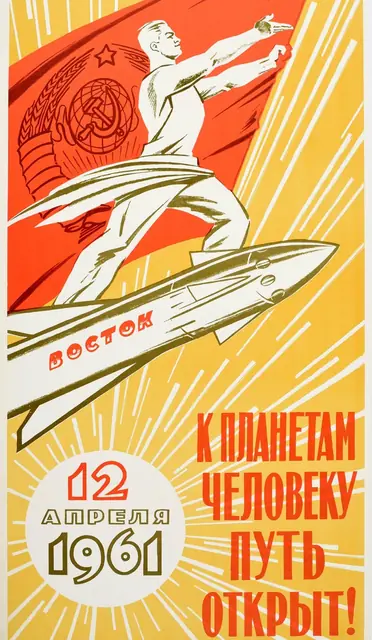
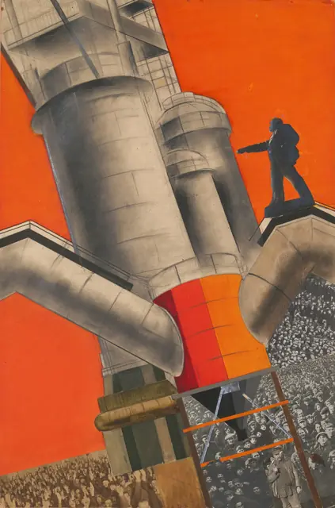
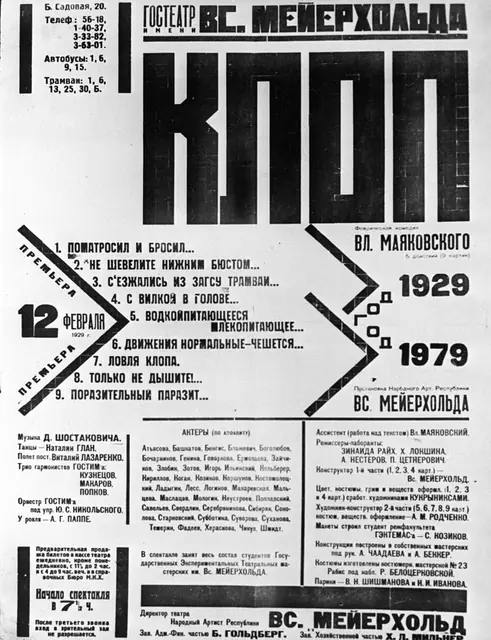
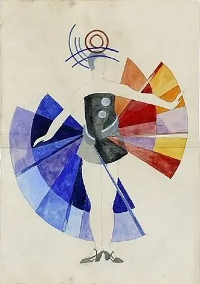
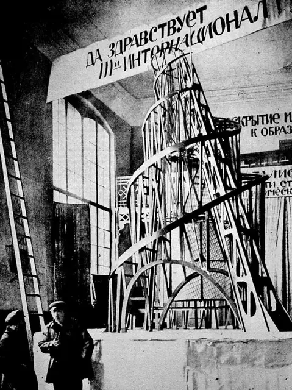
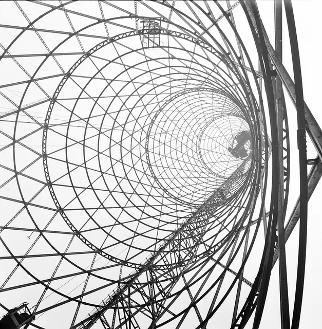
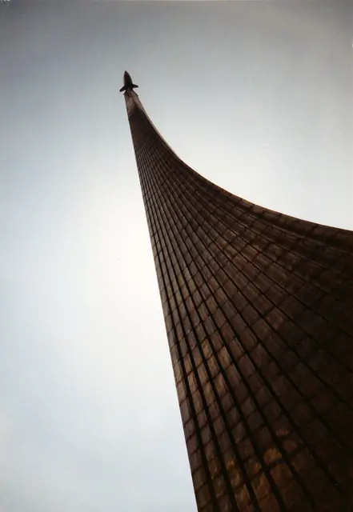
Games
- Command & Conquer: Red Alert 2
Study the cartoon end of the style: big, readable units and plenty of humour.
- Singularity
A Soviet research island bathed in Russian colours and propaganda, with architecture borrowed from BioShock's Rapture.28
- Red Matter
An abandoned base of Volgravia, a thinly renamed Soviet Union, on a moon of Saturn. Study the stark Soviet architecture and the propaganda art on even a secret entrance.29
- Atomic Heart
Study how it carries a bright Soviet future through architecture, magazines and clothes, with a dystopia alongside.4
Film, art and more
- Beat the Whites with the Red Wedge
A red triangle breaks apart a white circle, with the words on diagonals.3
- Alexander Rodchenko
Photographs from above, below and on the diagonal, with tilted horizons.11
- Aelita
Alexandra Exter's costumes and the Constructivist Martian sets are its most famous feature.30
- Georgy Krutikov
His 1928 Flying City put housing in the sky, with a ring-shaped communal building under each block.7
- Tatlin's Tower
A leaning iron spiral meant to be the world's tallest structure. It was never built.6
- Tekhnika Molodezhi
Launched in 1933 and for many years the most vibrant of the Soviet popular science magazines.1
- Road to the Stars
Pavel Klushantsev's film builds a space station in orbit and shows everyday life on board.31
- The Mystery of the Third Planet
Study its alien creatures and planets for the gentler side of Soviet space fiction.
Sources
- 1How Soviet Science Magazines Fantasized About Life in Outer Space
- 2Cosmonauts: Birth of an Exhibition
- 3El Lissitzky, The Avant-Garde, and The Russian Revolution
- 4EXCLUSIVE: Atomic Heart Devs Promise It's 'Like Nothing You've Ever Seen'
- 5Atomic Heart devs reveal more about the hottest shooter no one had heard of until last week
- 6Vladimir Tatlin
- 7The Soviet City in the Sky
- 8A Soviet vision of the future: the legacy and influence of Tekhikia – Molodezhi magazine
- 9Soviet Space Graphics: a cosmic journey to Cold War-era Russia
- 10Mick Gordon donates his Atomic Heart earnings to Ukrainian people: “The tragedy of this conflict cannot be overstated”
- 11Asphalting a Street in Moscow
- 12Exploring the influence of Soviet-era visuals on today’s artists
- 13‘Atomic Heart’ review: back in the USSR
- 14Raise your heads
- 15We Interview: Robert Bagratuni, Game Director for Atomic Heart
- 16Create a Constructivist Inspired Poster
- 17Russo One
- 18PT Sans
- 19Soviet style: Frédéric Chaubin puts cosmic Communist constructions in the frame
- 20Interview: Vladimir Kuzmin, Engineer Behind the Polivoks Synthesizer
- 21Reissued and Revisited: Eduard Artemiev’s Solaris “Original” Soundtrack
- 22Ulibka: a short and sweet dip into Soviet kitsch electronic space lounge pop
- 23Unorthodox uses of the Cyrillic alphabet
- 24Atomic Heart video game draws scrutiny from Ukrainian officials and gamers for alleged Russia ties
- 25How a cuddly toy and Soviet 80s rockers will help Hazza Al Mansouri into orbit
- 26Soviet Disco: The Tripped Out World of ’80s Communist Exercise Records
- 27Фонк-ремикс «Комарово» из Atomic Heart возглавил чарт «Яндекс Музыки»
- 28Singularity Takes You Down A Rabbit Hole With Recognizable Lining
- 29Red Matter Review – PS VR
- 30Aelita, Queen of Mars
- 31Doroga k Zvezdam